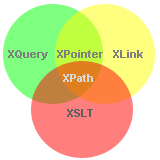

From http://www.w3schools.com (Copyright Refsnes Data)
XQuery is to XML what SQL is to database tables.
XQuery is designed to query XML data - not just XML files, but anything that can appear as XML, including databases.
Before you continue you should have a basic understanding of the following:
If you want to study these subjects first, find the tutorials on our Home page.
|  |
|
XQuery is a language for finding and extracting elements and attributes from XML documents.
Here is an example of a question that XQuery could solve:
"Select all CD records with a price less than $10 from the CD collection stored in the XML document called cd_catalog.xml"
XQuery 1.0 and XPath 2.0 share the same data model and support the same functions and operators. If you have already studied XPath you will have no problems with understanding XQuery.
You can read more about XPath in our XPath Tutorial.
XQuery can be used to:
XQuery is compatible with several W3C standards, such as XML, Namespaces, XSLT, XPath, and XML Schema.
XQuery 1.0 became a W3C Recommendation January 23, 2007.
To read more about the XQuery activity at W3C, please read our W3C Tutorial.
From http://www.w3schools.com (Copyright Refsnes Data)